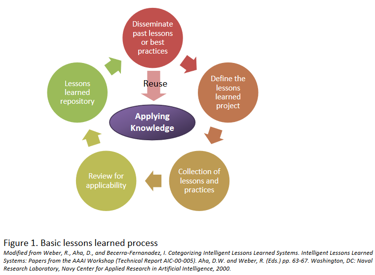
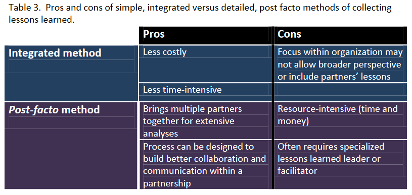
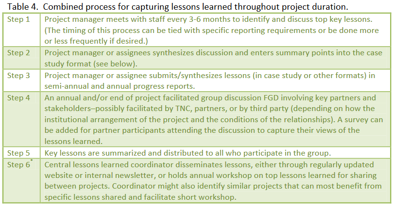

Week 13 - Lessons Learned
Introduction
Throughout a project’s life cycle, we learn lessons and discover opportunities for improvement.
Documenting lessons learned helps a project team discover both strengths and weaknesses. It provides an
opportunity for team members and/or partners to discuss successes during the project, unintended outcomes,
and recommendations for others involved in similar future projects.
Videos
Quiz
See Quizzes on Black Board.
Lecture Material
Assignment(s)
Assignment 4 -
Introduction, continued
Use of lessons learned is a principal component of an organizational culture committed to
continuous improvement and adaptive management. Lessons learned mechanisms
communicate acquired knowledge more effectively and ensure that beneficial information is
factored into planning, work processes, and activities. The mechanisms or processes used to
collect, share, and disseminate lessons learned may vary, but in general such a process is
comprised of five main elements: defining the project, collecting information, verifying
applicability, storage, and dissemination. The below figure is a generic representation of the lessons
learned process.

Basic Lessons Learned Process
- Define the Project.
This step is the initial step wherein the need for lessons learned is identified and the process
and team through which the lessons will be collected is established. It is important to establish
the specific need and purpose for lessons, the audience for the product, and which individuals
should comprise the project team.
- Collect.
The collection process involves the capture of information through structured and unstructured
processes such as project critiques, written forms, and meetings. The collection of lessons may
come from as many sources as an organization is willing to solicit.
- Verify and Synthesize.
This process serves to verify the accuracy and applicability of lessons submitted. Domain or
subject matter experts may be involved in coordinating and conducting reviews.
- Store.
The storage aspect of lessons learned usually involves incorporating lessons into an electronic
database for future sharing and dissemination.
- Disseminate.
The final element, and the most important, is the dissemination of lessons learned, since
lessons are of little benefit unless they are distributed and used by people who will benefit from
them.
Deciding on a process for collecting lessons learned
There are primarily two different approaches to capturing lessons learned, and each project
team must decide which approach, or perhaps a combination of approaches, works best for their project.
- Integrated.
The simplest approach is to incorporate lessons learned early, regularly, and consistently
through regular project reporting, or within the context of the initial management plan.
Capturing lessons learned would be part of the regular annual or semi-annual reporting cycle
and may even be embedded in the initial project management plan.
- Post-Facto.
The more detailed, complex approach is one which requires a thorough examination of the
project post-facto. This is sometimes done in projects reactively or as an afterthought when
project managers realize things could have been done differently. However, many organizations
who have invested heavily in a project over a long period of time, or who are interested in
replicating similar projects are willing to spend the time and money necessary to improve
future efficiency. While more resource-intensive, this approach offers the benefit of bringing
project members and partners together for an extensive look into the operations, successes,
and shortcomings of the project.

- Combination.
While it is preferred to begin with the integrated approach wherein lessons learned are part of
the initial project plan and team members meet regularly to capture lessons learned, it is also
helpful to bring together key partners and stakeholders with the project team and the end of or
during a project. This allows for a broader analysis and may help to build a sense of
collaboration and communication within the partnership or group responsible for project
implementation. The below table outlines how this combined approach may unfold.

Process Details
In identifying the project team, it is important to build initial engagement from all key players
who will be involved in advance of the project. Include the project manager, the project team,
and the key stakeholders in the lessons learned exercise. Select staff with specific expertise or
knowledge of the project and other needed skills, such as communication and writing.
Multiple resources exist for creating questionnaires and surveys, and designing interview
questions. Whatever method you are using, concentrate on obtaining information in four general areas:
- What went well?
- What didn't go well or had unintended consequences?
- If you had it all to do over again, what would you do differently?
- What recommendations would you make to others doing similar projects?
You can include other more detailed questions in your survey or interview, such as:
- Were the project goals attained? If not, what changes need to be made to meet
goals in the future?
- What surprises did the team have to deal with?
- What project circumstances were not anticipated?
- Did you develop any useful workarounds or solutions to problems that cropped up
during the project? Document the details in a way that will make sense later.
- For any problems that went unresolved what preventative measures can you invent
now that can help things go more smoothly next time?
- Are there any new “best practices” you can derive from this project? Note anything
that went so well – and now seems to be so thoroughly “road tested” – that you
would want to repeat the positive experience next time.
- Can you create an easily accessible repository for lessons learned and best practices
you have documented? This could be a database, website, or even a simple
document.
Suggested Lessons Learned Case Study Format
Title:
Period covered:
Date of the report:
Case Overview (1/2 - 3/4 page):
Background
Project Objectives/Goals
Conservation impact (1-2 paragraphs):
Evaluative description of results/measures (include timeline)
What worked well? (1-2 paragraphs):
Could include quotes from partners/staff - reflective description on lessons learned
What didn’t work so well? (1-2 paragraphs):
Could include quotes from partners/staff - reflective description on lessons learned
If you had it all to do over again, what would you do differently? (1-2 paragraphs):
What recommendations would you make to others doing similar projects? (1-2 paragraphs):
Would the above two questions providing similar descriptions?
Suggestions for others (1-2 paragraphs):
Could include quotes from partners/staff – prescriptive advice
Resources: Links to other relevant information
Metadata: -- would the information below appear at the bottom of the case study report?
Author: Name/Job Title/OU/Region/email
Location of Project: Region, OU/Country/State
MHT: What is the Major Habitat Type for this partnership?
Types of Partners: Government, Place-based NGO, International NGO, Corporate,
Community Based Organization etc.
Priority: Freshwater, Climate Change, Marine, Conservation Lands
Date: month/year written (place to allow for updating date)
Language: Language of case submission or translation
Also include a photo of partner/ partnering or place